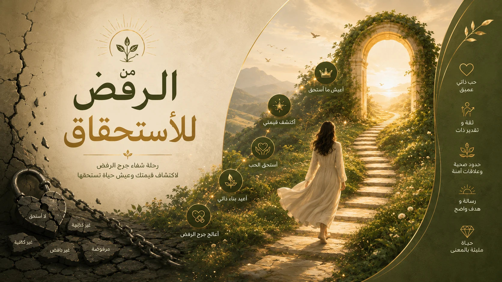
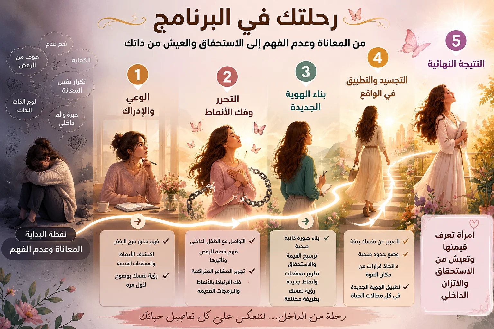

🌿 صورتك الذاتية وقيمتك
تشعرين أنكِ غير كافية أو غير مهمة، حتى مع نجاحك وكفاءتك. تقارنين نفسك بالآخرين، تقلّلين من إنجازاتك، وتجدين صعوبة في تقبّل عيوبك. قد تشعرين أن عليكِ تقديم المزيد دائمًا حتى تستحقي الحب والتقدير.
ملخص أهم ما تناولناه في الويبينار المجاني
قد تبدو بعض هذه المواقف منفصلة… لكن ماذا لو كان وراءها نمط مشترك؟
هذه المواقف مستوحاة من نقاط ألم حقيقية شاركتها نساء في لقاءَي الويبينار، وأُعيدت صياغتها دون نقل كلامهن حرفيًا أو ذكر هوياتهن.
تشعرين أنكِ غير كافية أو غير مهمة، حتى مع نجاحك وكفاءتك. تقارنين نفسك بالآخرين، تقلّلين من إنجازاتك، وتجدين صعوبة في تقبّل عيوبك. قد تشعرين أن عليكِ تقديم المزيد دائمًا حتى تستحقي الحب والتقدير.
تقدّمين الكثير للآخرين وتنتظرين منهم التقدير، لكنكِ لا تشعرين أنكِ مرئية أو مسموعة. يصعب عليكِ قول «لا»، أو طلب المساعدة، أو مواجهة من يزعجك خوفًا من الرفض أو خسارة العلاقة.
تجدين صعوبة في بناء صداقات أو علاقات عميقة وحميمة عاطفيًا، حتى مع المقربين منكِ. تحتاجين القرب والاحتواء، لكنكِ في الوقت نفسه تخافين أن يقترب أحد أكثر من اللازم أو يكتشف عيوبك ونقاط ضعفك؛ فتضعين مسافة أو تنسحبين.
تقلقين عند بداية علاقة عاطفية، أو تنجذبين لشخص يقترب منكِ ثم يبتعد ويتجاهلك. تخافين انكشاف حقيقتك أمام الشريك، وقد تكتمين احتياجاتك أو تترددين في طلب حقك المالي، أو لا تشعرين بالأمان في بعض المواقف معه.
تعملين بجدّ، لكنكِ تخجلين من طلب زيادة في الراتب أو المطالبة بحقوقك. تنكمشين عندما تتكلمين أمام المديرين رغم كفاءتك، وقد تجدين صعوبة في التعبير عن رأيك. وربما تعيشين خوفًا من صرف المال.
تتوترين عند تلقي دعوة، أو تفضّلين تجنّب المناسبات والتجمعات. تخافين حكم الناس والنقد والخطأ، وتشعرين بالخجل أو العار عند الكلام أمام مجموعة. أحيانًا تشعرين بالغربة أو أنكِ غير مرغوبة، ولا تجدين صداقات قريبة.
تحاولين أن تكوني مثالية وتسيطري على التفاصيل حتى لا تتعرضي للنقد. وفي أوقات أخرى يؤخّرك التسويف والتردد عن اتخاذ القرارات، أو تبتعدين عن الآخرين قبل أن تتعرضي لاحتمال الرفض.
كبرتِ على المقارنة بينكِ وبين إخوتك أو على قلة المدح والتقدير، وربما شعرتِ أن رأيكِ أو وجودكِ غير مهم. لا تزال بعض هذه التجارب تؤثر على نظرتك لنفسك، أو على شعورك بأن عليكِ إثبات قيمتك كي تُقبلي.
من فهم الجذور والأنماط إلى بناء علاقة أعمق مع الذات، والتدرّب على التغيير في الحياة اليومية.


استمعي إلى تجربة إحدى المشتركات في البرنامج التدريبي، إلى جانب رسائل المشاركات بعد تطبيق التمارين.
شاركت إحدى عميلاتي كضيفة في الويبينار، وحكت كيف أن سماع قصتي مع جرح الرفض ورؤية التغيير الذي عشته أعطياها الدليل الذي احتاجته لتؤمن بإمكانية التغيير. قالت إنها رأت فيّ نسختها المستقبلية، فقررت الانضمام إلى البرنامج التدريبي، واختارت تجربة VIP الفردية.
ملخص لمعنى شهادتها لتسهيل فهم اللهجة، وليس نقلًا حرفيًا لكلامها.
رسائل حقيقية من الحاضرات بعد اللقاء المجاني.
ربما حاولتِ تغيير بعض هذه السلوكيات مرارًا، ثم وجدتِ نفسك تعودين إليها. في هذا اللقاء ستفهمين لماذا قد يحدث ذلك، وكيف تتشكل هذه الأنماط، وما الخطوات التي يمكنك البدء بها للعمل على تغييرها.
▶ مشاهدة الويبينار مجانًا